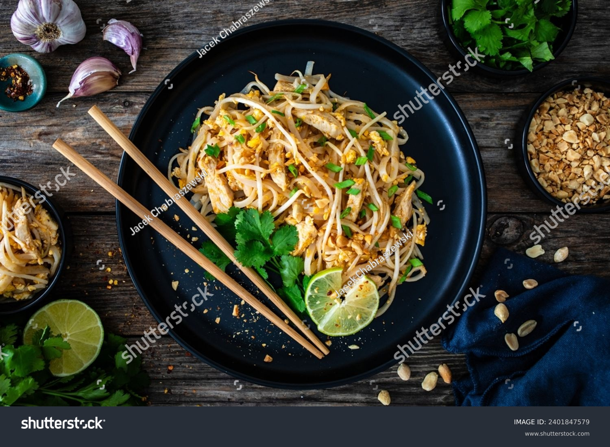

Home Page
Chicken Pad Thai

Description
Pad Thai is a popular Thai stir-fried noodle dish known for its balance of sweet, savory, tangy, and umami flavors.
It typically consists of rice noodles stir-fried with eggs, tofu or shrimp, and a flavorful sauce made from tamarind paste,
fish sauce (or a vegetarian alternative), palm sugar, and lime juice. Common ingredients also include bean sprouts, garlic,
shallots, and crushed peanuts, with chili flakes added for spice. The dish is often garnished with fresh cilantro, lime wedges,
and additional peanuts for extra texture and flavor. Pad Thai is a staple of Thai street food and is enjoyed worldwide for its rich, yet balanced taste.
Ingredients
For Sauce:
- 3 tbsp tamarind paste
- 3 tbsp fish sauce (or soy sauce for a milder option)
- 1 ½ tbsp brown sugar or palm sugar
- 1 tbsp rice vinegar
- 0.5 tsp red pepper flakes (optional, for spice)
For Stir Fry:
- 8 oz (225g) rice noodles
- 2 tbsp vegetable oil
- 1 chicken breast, thinly sliced
- 2 cloves garlic, minced
- 1 small shallot, finely chopped
- 1 egg, lightly beaten
- 1 cup bean sprouts
- 2 green onions, sliced
- ¼ cup crushed peanuts
- Lime wedges, for serving
- Fresh cilantro (optional, for garnish)
Steps
- Prepare the noodles: Cook the rice noodles according to package instructions (usually soaking in hot water for 5–7 minutes until tender but still firm). Drain and set aside.
- Make the sauce: In a small bowl, mix tamarind paste, fish sauce, brown sugar, rice vinegar, and red pepper flakes. Stir until the sugar dissolves. Set aside.
- Cook the chicken: Heat 1 tbsp of oil in a large pan or wok over medium-high heat. Add the sliced chicken and cook until browned and fully cooked through (about 3–4 minutes). Remove and set aside.
- Stir-fry the aromatics: In the same pan, add another tbsp of oil. Sauté garlic and shallot until fragrant (about 30 seconds).
- Cook the egg: Push the garlic and shallot to the side of the pan. Pour in the beaten egg and scramble it until just cooked.
- Combine ingredients: Add the cooked noodles and chicken back to the pan. Pour in the sauce and toss everything together until well coated.
- Add fresh elements: Stir in the bean sprouts and green onions, cooking for another minute.
- Serve: Transfer to plates and top with crushed peanuts, lime wedges, and fresh cilantro if desired.
Home Page